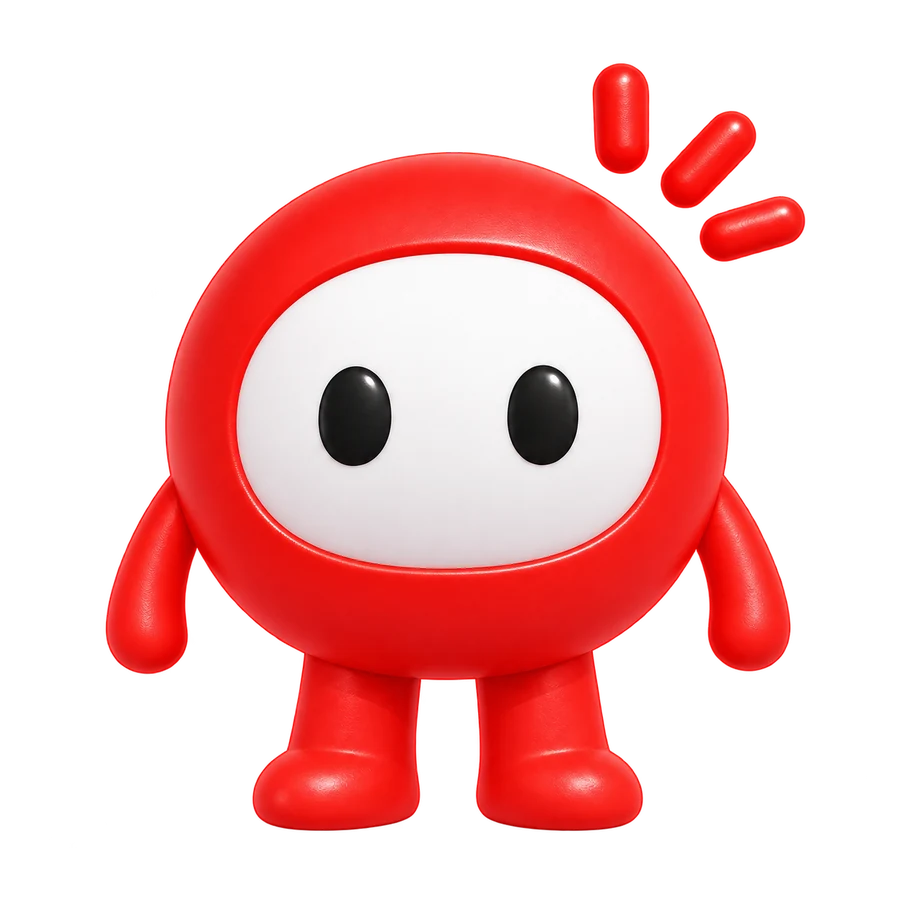

Hola, soyHi, I’m Nicole Sebastiani
Diseño cómo conversa la IA. I design how AI talks.
Conversational AI & UX Designer especializada en agentes de voz. Defino cómo suenan, qué emociones atienden y cuándo ceden el control a un humano. Y los construyo con ElevenLabs y n8n. Conversational AI & UX Designer specialised in voice agents. I define how they sound, which emotions they handle and when they hand over to a human. And I build them with ElevenLabs and n8n.
- Demos
- 5 demos5 demos presentadas a clientespresented to clients
- SectoresSectors
- 5 sectores5 sectors · banca, salud, energía, telecomunicaciones y cobranza· banking, healthcare, energy, telecom and collections
- UbicaciónLocation
- Lima · remoto· remote
Hola, soy Nicole.Hi, I’m Nicole.
Diseño agentes de IA que escuchan, entienden y resuelven, y que suenan como alguien en quien confiarías. I design AI agents that listen, understand and resolve, and that sound like someone you’d trust.
Empecé en soporte, al otro lado de la línea, atendiendo a personas frustradas. Ahí entendí algo que hoy guía mi trabajo: una conversación funciona cuando el usuario se siente escuchado, no cuando el sistema responde rápido.
I started in support, on the other end of the line, helping frustrated people. That taught me what guides my work today: a conversation works when users feel heard, not when the system answers fast.
Hoy decido cómo habla una marca por teléfono, cómo negocia una deuda o calma a un paciente, y dónde la IA debe ceder el control a reglas estrictas o a una persona. Cada agente lo pruebo en llamadas, ajusto lo que falla y lo vuelvo a probar antes de darlo por bueno.
Today I decide how a brand speaks on the phone, how it negotiates a debt or calms a patient, and where AI must hand control to strict rules or to a person. I test every agent in calls, fix what fails and test it again before calling it done.
Lo que aportoWhat I bring
Del research a la llamada en producción: cubro el diseño conversacional completo y también lo construyo.From research to the live call: I cover the full conversational design process and build it too.
Diseño conversacionalConversational design
- Rol, personalidad y voz del agente
- Agent role, persona and voice
- Matrices de emoción por situación
- Emotion matrices by situation
- Flujos, intenciones y triaje
- Flows, intents and triage
- Reparación ante confusión o molestia
- Repair for confusion or frustration
- Escalamiento seguro a humano
- Safe handoff to humans
IA generativaGenerative AI
- Prompts de sistema
- System prompts
- Flujos determinísticos + generativos
- Deterministic + generative flows
- Tool calling y captura de datos
- Tool calling and data capture
- Guardrails de identidad y consentimiento
- Identity and consent guardrails
- Bases de conocimiento organizadas por tema
- Knowledge bases organised by topic
Build y orquestaciónBuild & orchestration
- ElevenLabs Agents
- n8n y Make
- n8n and Make
- Webhooks y APIs (Postman)
- Webhooks and APIs (Postman)
- Métricas: NPS y desenlace por llamada
- Metrics: NPS and outcome per call
- Dashboards de seguimiento
- Tracking dashboards
UX / CX
- Research y entrevistas
- Research and interviews
- Journeys AS-IS → TO-BE
- AS-IS → TO-BE journeys
- Análisis de funnel, tNPS y voz del cliente
- Funnel, tNPS and voice-of-customer analysis
- Arquitectura de información
- Information architecture
- Usability testing
- Usability testing
- Prototipado en Figma
- Prototyping in Figma
Clarito
Un asesor de voz con cuerpo y personalidad para un tótem en tienda de Claro. Pulsas un botón y conversas con él, sin menús ni formularios; si decides comprar, registra tu pedido. A voice advisor with a body and a personality for a kiosk in a Claro store. You press one button and talk to it, no menus or forms; if you decide to buy, it records your order.
- Voz en tiempo real.Real-time voice. Conversación natural, no un árbol de opciones.Natural conversation, not an options tree.
- Transcripción en pantalla.On-screen transcript. Lo que se dice queda escrito para leerlo.Everything said is written down to read.
- Un personaje.A character. La mascota da cara a la IA y su boca se mueve con la voz.The mascot gives the AI a face, and its mouth moves with the voice.
- Pedido registrado.Order recorded. Si el cliente compra, el pedido llega al panel del personal de tienda.If the customer buys, the order reaches the store staff’s dashboard.

Cómo diseño un agente de voz.How I design a voice agent.
Seis pasos, cada uno con un ejemplo real. Desliza para recorrerlos.Six steps, each with a real example. Scroll through them.
- 1
Escuchar el journey realListen to the real journey
Research con usuarios y expertos: dónde dudan, abandonan o se frustran hoy, y cómo resuelve hoy el cliente ese proceso en sus otros canales.Research with users and experts: where they hesitate, drop off or get frustrated today, and how the client handles that process in its other channels.
En la práctica:In practice: Entrevisto a quien atiende las llamadas antes de escribir una sola frase.I interview the people who take the calls before writing a single line.
entrevistasinterviewspain pointsjourney - 2
Definir rol y personalidadDefine role & persona
Quién es el agente, cómo suena la marca y qué no puede hacer.Who the agent is, how the brand sounds and what it can’t do.
En la práctica:In practice: Escribo primero los límites del agente.I write the agent’s limits first.
personatono de voztone of voicelímiteslimits - 3
Diseñar la matriz de emocionesDesign the emotion matrix
Para cada situación: qué siente el cliente, qué tono usa el agente y qué dice exactamente.For each situation: what the customer feels, which tone the agent uses and what exactly it says.
En la práctica:In practice: Ante un cliente molesto, el agente baja el ritmo y reconoce el problema antes de pedir datos.With an upset customer, the agent slows down and acknowledges the problem before asking for details.
situación → tono → frasesituation → tone → line - 4
Diseñar el flujoDesign the flow
Intenciones, rutas, reparación cuando algo falla y escalamiento a un humano cuando hay riesgo.Intents, routes, repair when something fails and handoff to a human when there’s risk.
En la práctica:In practice: Todo flujo tiene salida a una persona.Every flow has a way out to a person.
intencionesintentsrutasrouteshandoff - 5
Separar lo seguro de lo generativoSeparate safe from generative
Identidad y consentimiento en reglas estrictas; la conversación, en prompts.Identity and consent in strict rules; the conversation, in prompts.
En la práctica:In practice: La verificación de identidad nunca depende del modelo.Identity verification never depends on the model.
promptsguardrailsflujo determinísticodeterministic flow - 6
Construir, conectar y medirBuild, connect, measure
El agente en ElevenLabs, las herramientas en n8n y cada llamada cerrando con un dato: desenlace y NPS.The agent in ElevenLabs, tools in n8n, and every call closing with data: outcome and NPS.
En la práctica:In practice: Sin dato de cierre, no se puede mejorar.Without closing data, there’s nothing to improve on.
ElevenLabsn8nNPS
Prueba una matriz de emociones.Try an emotion matrix.
Elige cómo llega el cliente y escucha cómo responde el agente. Las frases son reales, de mis agentes de telco, energía y salud.Choose how the customer arrives and hear how the agent responds. The lines are real, from my telco, energy and healthcare agents.
Cinco agentes de voz, cinco sectores.Five voice agents, five sectors.
Demos presentadas a clientes. Cada una con su personalidad, sus reglas y su forma de derivar a una persona.Demos presented to clients. Each with its own personality, its own rules and its own way of handing over to a person.
Del dato a la decisión.From data to decision.
Research de journeys en la tienda online de un operador de telecomunicaciones.Journey research for a telecom operator’s online store.
Más proyectos de UX/UI.More UX/UI projects.
-
Conversational AI & UX Designer
NTT DATA- Diseñé y presenté demos funcionales de agentes de voz para banca, salud, energía, telecomunicaciones y cobranza, en ElevenLabs y orquestados con n8n. La de energía derivó en una propuesta de piloto con dos niveles de integración.
- Designed and presented working voice-agent demos for banking, healthcare, energy, telecom and collections, built in ElevenLabs and orchestrated with n8n. The energy demo led to a pilot proposal with two levels of integration.
- Definí rol, personalidad y matrices de emoción, y flujos con reparación y escalamiento a humano.
- Defined role, persona and emotion matrices, and flows with repair and human handoff.
- Separé identidad y consentimiento en reglas estrictas y dejé la conversación en prompts, para poder auditar cada paso.
- Put identity and consent in strict rules and left the conversation in prompts, so every step can be audited.
- Traduje procesos existentes del cliente a flujos conversacionales, como las reglas de agendamiento de imágenes de una clínica.
- Translated clients’ existing processes into conversational flows, such as a clinic’s imaging booking rules.
- UX Research para Claro: journey de portabilidad cruzando funnel, tNPS y voz del cliente, y research de e-commerce con 20 referentes, 4 expertos y 10 usuarios.
- UX Research for Claro: a portability journey crossing funnel, tNPS and voice of customer, and e-commerce research with 20 benchmarks, 4 experts and 10 users.
-
Tech Support Senior
Métrica Andina- Detecté y prioricé puntos de dolor con análisis de incidencias y feedback.
- Identified and prioritised pain points through incident analysis and feedback.
- Pruebas de APIs con Postman y análisis con SQL/NoSQL; documenté flujos en Miro.
- API testing with Postman and analysis with SQL/NoSQL; documented flows in Miro.
-
Especialista de Service DeskService Desk Specialist
Canvia- Atención directa con empatía y escucha activa, resolviendo incidencias y reduciendo la frustración del usuario.
- Direct support with empathy and active listening, resolving incidents and reducing user frustration.
- Automaticé procesos repetitivos y recogí feedback continuo.
- Automated repetitive processes and gathered continuous feedback.
EducaciónEducation
CertificacionesCertifications
HerramientasTools
Uso diarioDaily
También usoAlso
Hablemos.Let’s talk.
Cuéntame qué conversación necesita funcionar. Tell me which conversation needs to work.